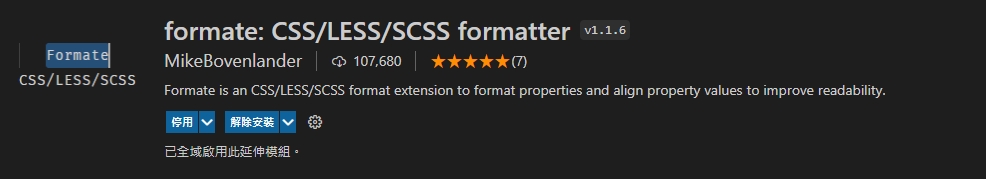
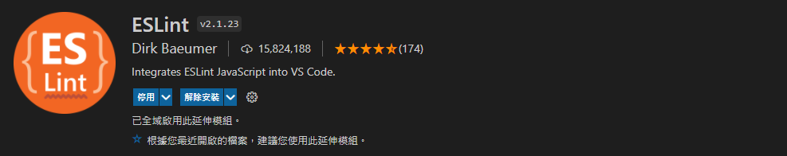
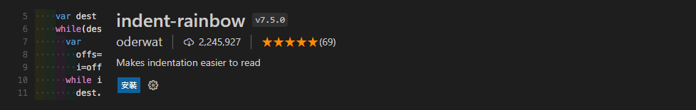
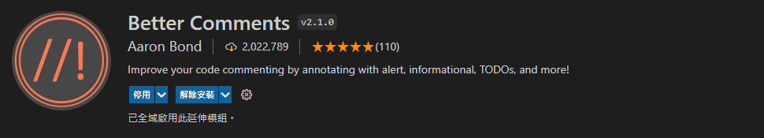
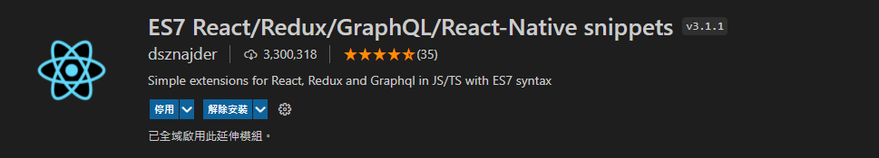
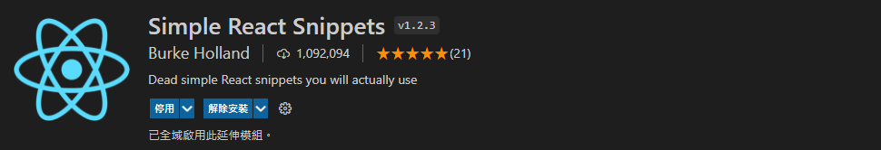

擴充套件
又稱延伸模組（Extension）。
首先要先說明我目前主要開發的語言是Javascript和React，目前還努力在前端打滾學習中。所以擴充主要都會圍繞在HTML、CSS、Javascript、React上。
使用擴充是見仁見智，所以我會依個人使用習慣來推薦，有興趣的就繼續看下去吧！
高度推薦（必裝）
Live Server
Live Server能將HTML檔案轉換成瀏覽器網站並即時更新顯示，注意你需要先開啟一份HTML檔（.html)，接著只要按下VSCode右下角的Go Live按鈕或者右鍵Open with live server，就能開啟執行本地伺服器（Localhost）。
Formate: CSS, LESS and SCSS Formatter

HTML檔案在編譯的時候VSCode是有預設排版的，所以不需要另外安裝擴充，但是CSS就不一樣了，VSCode是沒有預設排版的功能，所以我推薦下載這個擴充。
ESLint

ESLint這個擴充是Javascript風格指引的輔助工具，如果說未來需要和別人共同開發專案，最好是從現在開始培養編寫習慣。不然以後也許別人看你的程式碼會想拿磚頭砸你
剛開始使用一定會報出一堆錯誤，會覺得很麻煩。但是每個錯誤去了解為什麼並修正後，以後你的寫作風格就會很統一了。
cdnjs
這個擴充可以方便你嵌入或查詢cdnjs裡的各個JS框架版本，例如：jquery、Fontawesome、……等等。
Chinese Lorem
中文版的假字產生器，只需要輸入ctlorem或者加上字數ctlorem120。
熱門推薦（選配）
indent-rainbow

會把縮排空格填上彩虹的顏色，可以讓你更輕鬆比對縮排位置，雖說是熱門推薦但我是覺得畫面有點花而沒有使用，看個人吧！
Code Spell Checker
這個擴充有利有弊，檢查英文有無拼錯非常好用，但是某些情況會誤報，而個人看到誤報的毛毛蟲會有強迫症想去掉，也是看個人有沒有英文拼字輔助的需求。
Better comments

可以讓你附註的文字變顏色，可以顯著標記之後要回來修改的地方等等重大資訊。
根據語言需求安裝
ES7 React/Redux/GraphQL/React-Native snippets

一些React相關的snippets，有在寫React framework的是必載。
Simple React Snippets

這個和前一個擴充一樣是React snippets，但是內容稍微不同，可以互補使用。
markdownlint
因為我的網誌就是用markdown語法寫的，為了統一文章的寫作風格，所以我有下載markdownlint來糾正一些寫法的錯誤。有在寫Markdown的人也很推薦使用。
其實這些擴充不用裝
Auto rename tag
改標籤（TAG）會自動幫你連開頭和結尾一起變更，只適用.html檔，javascript內的是不適用這功能的。
但是這個擴充其實不用安裝，VSCode就有內建了，只需要在檔案>喜好設定>設定內搜尋Editor: Linked Editing勾選即可。（預設是：關）
Auto close tag
能自動在開頭標籤後生成結束標籤。
這個下載500萬次的擴充其實也是VSCode就有內建的功能，而且不必特別設定，預設就是開。但如果不小心關到，可以到檔案>喜好設定>設定搜尋Auto Closing Tags，把HTML: Auto Closing Tags、Javascript: Auto Closing Tags、Typescript: Auto Closing Tags這三項打勾
如果是用setting.json修改語法如下：
1 | { |